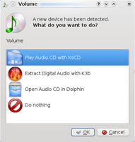
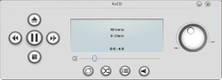
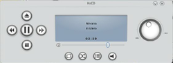
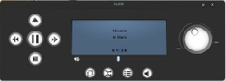
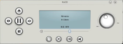
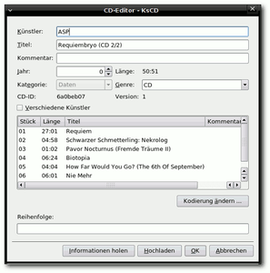
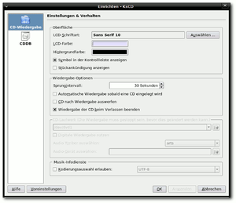

KsCD
Dieser Artikel wurde für die folgenden Ubuntu-Versionen getestet:
Ubuntu 14.04 Trusty Tahr
Zum Verständnis dieses Artikels sind folgende Seiten hilfreich:
KsCD  ist ein klassischer CD-Player für KDE, der die wesentlichen Funktionen zum Abspielen zur Verfügung stellt. Die Anwendung verfügt über die folgenden Funktionen:
ist ein klassischer CD-Player für KDE, der die wesentlichen Funktionen zum Abspielen zur Verfügung stellt. Die Anwendung verfügt über die folgenden Funktionen:
Anzeige von Künstler, Album und Titel über die freie Datenbank freedb
lokale Speicherung der CD-Informationen
bei Bedarf: freedb-Einträge erzeugen
|  |
| CD mit KsCD abspielen |
Installation¶
KsCD ist standardmäßig nicht installiert, daher muss folgendes Paket installiert [1] werden:
kscd
 mit apturl
mit apturl
Paketliste zum Kopieren:
sudo apt-get install kscd
sudo aptitude install kscd
Bedienung¶
KsCD kann über "K-Menü -> Programme -> Multimedia -> CD-Wiedergabe (KsCD)" gestartet werden. Alternativ kann man auch einfach eine CD einlegen. Nun öffnet sich die Geräteüberwachung und man kann über den angezeigten Dialog KsCD starten.
Nachdem KsCD gestartet ist und eine Audio-CD in das Laufwerk eingelegt wurde, holt KsCD die CD-Informationen aus dem Internet und zeigt sie entsprechend an. Über die Schaltflächen kann man dann, wie vom CD-Player gewohnt, KsCD bedienen.
Design anpassen¶
Durch  auf den Player und der Auswahl von "Einrichten -> Erscheinungsbild" kann das Aussehen angepasst werden. In diesem Modul kann man zum einen Schriftart und -farbe festlegen, zum anderen über die Auswahlliste "Adresse" das Erscheinungsbild konfigurieren. Da dies über SVG-Dateien bestimmt wird, kann man auch eigene Designs erstellen und verwenden.
auf den Player und der Auswahl von "Einrichten -> Erscheinungsbild" kann das Aussehen angepasst werden. In diesem Modul kann man zum einen Schriftart und -farbe festlegen, zum anderen über die Auswahlliste "Adresse" das Erscheinungsbild konfigurieren. Da dies über SVG-Dateien bestimmt wird, kann man auch eigene Designs erstellen und verwenden.
Die folgende Tabelle zeigt alle standardmäßig verfügbaren Designs:
|  |
| Default |
|  |
| Chrome |
|  |
| Obsidian Coast |
|  |
| Steel |
LCD-Anzeige:¶
Wenn man auf die Zeitangabe in der LCD-Anzeige klickt, schaltet sie zwischen den folgenden Angaben um:
akt. Stück(Sek)
Rest akt. Stück
akt. Gesamt Gespielt
Rest akt. CD
CDDB¶
Im CD-Editor ist es möglich Audio-CDs, die nicht in der freedb-Datenbank vorhanden sind, manuell mit Künstler, Album und Titel aufzufüllen. Anschließend kann man diese Informationen in die Datenbank hochladen, um diese der Allgemeinheit zugänglich zu machen.
|  |
| CD-Editor |
|  |
| Extras |
Extras¶
Hinter der Schaltfläche "Extras" versteckt sich der Eintrag "KsCD einrichten".
 weitere Abspielprogramme
weitere Abspielprogramme- Erstellt mit Inyoka
-
 2004 – 2017 ubuntuusers.de • Einige Rechte vorbehalten
2004 – 2017 ubuntuusers.de • Einige Rechte vorbehalten
Lizenz • Kontakt • Datenschutz • Impressum • Serverstatus -
Serverhousing gespendet von